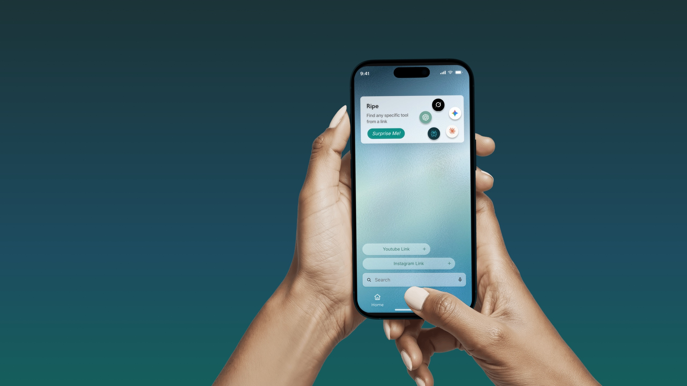

23 in 100
Reach2026

Capital program dashboard2026

Ripe2026
Pastiche2026

Distill2026

Pit Boss kiosk2024

Frontdoor: Home Passport2026

Vibin2025
Interfaces I have researched, designed and often built, from design tokens to shipped apps.
